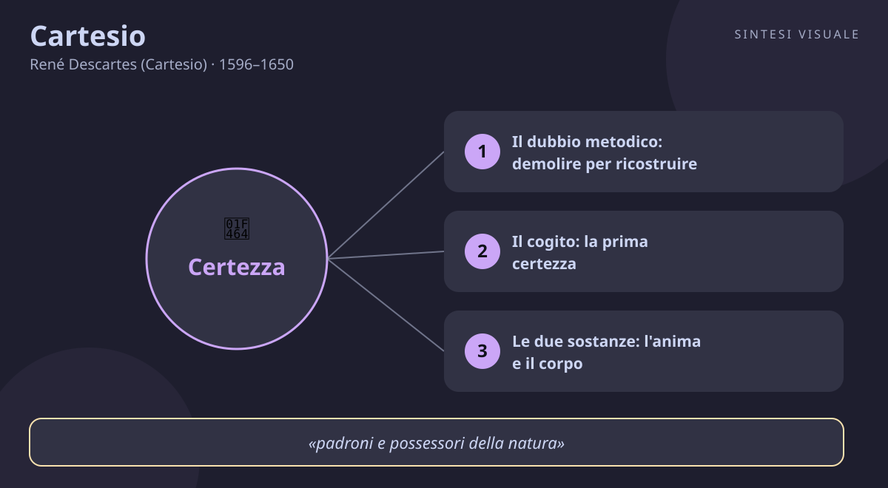

Cartesio
René Descartes (Cartesio) · 1596–1650
«Penso, dunque sono»
- Cogito
- Dubbio metodico
- Dualismo
- Metodo
💬La massima
«Penso, dunque sono.»
— Cartesio. In francese «je pense, donc je suis», Discorso sul metodo, 1637 (parte quarta); in latino «ego cogito, ergo sum», Principi della filosofia, 1644 (parte I, articolo 7); nelle Meditazioni metafisiche, 1641 (Seconda meditazione), la stessa idea è espressa così: «questa proposizione, io sono, io esisto, è necessariamente vera ogni volta che la pronuncio o la concepisco nel pensiero».
Spiegazione. Immagina di decidere, per una volta, di non credere a niente: non ai tuoi occhi (che a volte ti ingannano), non ai libri (che spesso si contraddicono), non alla matematica (e se un genio maligno ti facesse sbagliare anche a fare due più due?). Cartesio fece davvero questo esperimento mentale e si accorse di una cosa straordinaria: puoi dubitare di tutto, ma non puoi dubitare di star dubitando. Il dubbio stesso è un pensiero, e un pensiero non può esistere senza qualcuno che lo pensa. È come cercare di cancellare la propria ombra pestandola: ogni tentativo dimostra che ci sei. Così, in mezzo alle macerie di ogni certezza, resta in piedi un unico punto fermo: se penso — anche solo per dubitare — allora esisto. Non è un ragionamento complicato: è il fondamento su cui ricostruire tutto il resto, mattone dopo mattone.
Il punto sottile. Attenzione: Cartesio non sta dicendo «ragiono, quindi valgo» né «se non pensi non esisti». Sta dicendo qualcosa di più radicale: anche nell'ipotesi più nera — mondo falso, sensi ingannati, corpo illusorio — resta una certezza indistruttibile, il fatto stesso di essere un essere che pensa. E nota bene: non dimostra cosa sei (un uomo? un'anima? un cervello?), ma solo che sei. È poco? È pochissimo, ed è tutto: è l'unico chiodo a cui appendere l'intera conoscenza. Da lì Cartesio ripartirà per dimostrare che Dio esiste e che il mondo esterno è reale — ma senza quel primo chiodo, ogni discorso crollerebbe.
Perché conta oggi. Viviamo nell'epoca delle certezze urlate e fragili: ognuno ha un'opinione su tutto, i feed ci confermano sempre, e cambiamo idea a seconda dell'ultimo video visto. Cartesio ci insegna il movimento opposto: invece di accumulare opinioni, ogni tanto demolisci. Chiediti: di ciò che credo — sul lavoro, sulla politica, su me stesso — cosa so davvero e cosa ho solo sentito dire? Quello che resta in piedi dopo il dubbio onesto è il tuo vero punto di partenza. Il cogito è anche un antidoto all'ansia da prestazione mentale: vali perché sei un essere che pensa e cerca, non perché hai sempre ragione.
👤Biografia
René Descartes nacque il 31 marzo 1596 a La Haye, un villaggio della Turenna (oggi si chiama Descartes in suo onore), da una famiglia della piccola nobiltà di toga: il padre Joachim era consigliere al parlamento di Bretagna. La madre morì quando lui aveva appena un anno, e il bambino crebbe gracile e curioso, con una salute delicata che gli valse — racconta la tradizione — il permesso di restare a letto fino a tardi: abitudine che conservò da adulto, perché diceva di pensare meglio al mattino, sotto le coperte.
Il collegio e l'insoddisfazione. Dal 1607 studiò al collegio gesuita di La Flèche, la scuola più prestigiosa di Francia: latino, greco, retorica, filosofia scolastica, matematica. Uscì con un'ottima istruzione e una cocente delusione: si era accorto che, dopo anni di studio, di certo non sapeva quasi niente. Si laureò in diritto a Poitiers nel 1616, ma invece di fare l'avvocato scelse la divisa: si arruolò come volontario negli eserciti della guerra dei Trent'anni, prima con Maurizio di Nassau in Olanda, poi con il duca di Baviera. Non per amore delle battaglie — che evitò con cura — ma perché, diceva, voleva «leggere il gran libro del mondo» invece dei libri dei professori.
La notte della stufa. La leggenda filosofica più famosa dopo quella di Archimede nella vasca accadde la notte tra il 10 e l'11 novembre 1619, in Germania: chiuso in una stanza riscaldata da una stufa, il giovane Descartes fece tre sogni sconvolgenti che interpretò come una chiamata — fondare una scienza nuova, certa come la matematica. Da quella notte non smise più di lavorare al suo progetto: un metodo universale per non sbagliare mai.
Vent'anni in Olanda. Dal 1628 visse nella Repubblica delle Province Unite: il paese più libero e ricco d'Europa, dove poteva stampare senza la censura di Parigi. Si spostava di continuo — una ventina di indirizzi diversi — e teneva nascosto il suo recapito quasi a tutti: voleva la solitudine per pensare. Lavorava al mattino, faceva lunghe passeggiate, costruiva strumenti ottici, sezionava animali per studiarne l'anatomia, e teneva una fittissima corrispondenza con il frate Marin Mersenne, il suo «postino scientifico», e con la principessa Elisabetta di Boemia, sua allieva e amica, con cui discusse per anni il rapporto tra anima e corpo.
La fine al freddo del Nord. Nel 1649 la regina Cristina di Svezia, ventitreenne coltissima e capricciosa, lo invitò a Stoccolma per farsi istruire in filosofia. Pretese lezioni alle cinque del mattino, nel palazzo gelido del Nord: per un uomo abituato a pensare sotto le coperte fu una condanna. Dopo pochi mesi si ammalò di polmonite e morì l'11 febbraio 1650, a soli cinquantatré anni. Le sue opere finirono all'Indice dei libri proibiti nel 1663, e le sue spoglie tornarono in Francia dopo anni di peregrinazioni — come se nemmeno da morto avesse voluto stare fermo.
Il carattere. Riservato fino alla mania della privacy, nemico delle dispute accademiche («chi ama la verità deve starsene in disparte», scriveva), ma generoso con gli amici veri. Scrisse il Discorso in francese invece che in latino perché voleva parlare anche alle donne e agli uomini comuni, non solo ai professori: un gesto rivoluzionario. Metodico, testardo, con la fiducia incrollabile che la ragione, usata bene, potesse risolvere tutto — dalla geometria alle passioni del cuore.
📌Sintesi del pensiero
Cartesio è il padre del razionalismo moderno: la ragione, non i sensi né l'autorità, è la bussola della conoscenza. Con il dubbio metodico demolisce ogni opinione incerta per trovare il fondamento indubitabile — il cogito, «penso, dunque sono» — da cui ricostruire: Dio esiste ed è garante della verità, quindi le idee «chiare e distinte» sono affidabili e il mondo esterno è reale. L'uomo è l'unione di due sostanze, il pensiero (res cogitans) e la materia (res extensa); la natura intera è una grande macchina spiegabile con la matematica. Il suo metodo in quattro regole — evidenza, analisi, sintesi, controllo — fonda la scienza moderna.
- Metodo: quattro regole — non accettare mai nulla senza evidenza, dividere ogni problema in parti, risalire dal semplice al complesso, controllare tutto alla fine.
- Antropologia: dualismo di mente e corpo; il corpo è una macchina, la mente una sostanza pensante; l'uomo è il loro intreccio misterioso.
- Teologia e fisica: Dio, essere perfetto, non può ingannarci: garantisce la verità delle idee chiare e distinte e la realtà del mondo fisico, fatto solo di estensione e movimento.
🏛️I temi fondamentali
- Il dubbio metodico: demolire per ricostruire. Cartesio non dubita perché è scettico: dubita come l'operaio che piccona un muro per vedere se regge. Nella Prima meditazione passa in rassegna tutto: i sensi ingannano (un bastone nell'acqua sembra spezzato), i sogni confondono (come distinguere il sonno dalla veglia?), e se esistesse un «genio maligno» potentissimo che mi illude su tutto, persino sulla matematica? Alla fine resta un solo frammento indistruttibile: il cogito. Il dubbio, per Cartesio, è come il setaccio del cercatore d'oro: butta via la sabbia e trattiene la pepita. Esempio concreto: prima di firmare un contratto o di sposare un'idea politica, fai il suo gioco — chiediti «e se fosse falso?» e guarda cosa resta.
- Il cogito: la prima certezza. «Penso, dunque sono» non è un sillogismo imparato a memoria: è un'intuizione immediata. Nel momento stesso in cui dubiti, pensi, sogni o ti illudi, ci sei: l'atto del pensare garantisce l'esistenza di chi pensa. È il punto di Archimede della filosofia: «datemi un punto fermo e solleverò il mondo». Da qui Cartesio ricostruisce tutto — l'esistenza di Dio, poi quella del mondo — con la pazienza di un muratore che, trovata la roccia, rialza la casa. Nota il coraggio: invece di partire da Dio o dalla Bibbia come tutti i filosofi del suo tempo, parte da sé, dalla propria esperienza interiore. La filosofia moderna nasce in quell'istante.
- Le due sostanze: l'anima e il corpo. Per Cartesio esistono due tipi di realtà: la res cogitans, la cosa che pensa (indivisibile, libera, consapevole), e la res extensa, la cosa estesa (il corpo e tutta la natura: divisibile, misurabile, meccanica). Il corpo umano è una macchina meravigliosa — cuore come pompa, nervi come fili, riflessi come molle — e gli animali, diceva provocatoriamente, sono solo automi senza pensiero. Il problema, che lo tormentò fino alla fine (lo discute nelle lettere alla principessa Elisabetta), è: come comunicano le due sostanze? Propose la ghiandola pineale, nel cervello, come «cabina di regia». La soluzione era fragile, ma la domanda era eterna: è il famoso problema mente-corpo, su cui i neuroscienziati discutono ancora oggi.
- Dio garante e le idee chiare e distinte. Trovato il cogito, Cartesio deve uscire dalla propria testa: come faccio a fidarmi del mondo? La sua risposta passa per Dio: ho in mente l'idea di un essere perfetto e infinito, e io — finito e imperfetto — non potrei averla inventata da solo; deve avermela messa lì Dio stesso, che dunque esiste. E un Dio perfetto non può essere un imbroglione: se mi ha dato la ragione, posso fidarmi delle idee che vedo in modo «chiaro e distinto» (come «due più due fa quattro» o «penso»). Così Dio diventa il notaio della conoscenza: firma e garantisce che la matematica descriva davvero il mondo. Che ci creda o no, il lettore moderno riconosce qui la mossa decisiva: la scienza ha bisogno di un fondamento di fiducia nella ragione.
- Il metodo e la natura-macchina. Nella seconda parte del Discorso, Cartesio detta le sue celebri quattro regole: evidenza (mai accettare nulla senza vederlo chiaramente), analisi (dividere ogni difficoltà in pezzi), sintesi (risalire dal semplice al complesso), enumerazione (ricontrollare tutto). Con questo metodo trattò la natura come un grande orologio: niente anime misteriose nelle cose, solo materia in movimento spiegabile con la matematica. Frutto diretto di questa idea è la geometria analitica — le «coordinate cartesiane» che hai usato a scuola per disegnare rette e parabole: un ponte tra algebra e geometria che cambiò la scienza per sempre. L'arcobaleno, spiegato nelle Meteore, e la luce, nella Diottrica, divennero problemi di angoli e rifrazioni, non più miracoli.
📚Le opere principali
- Discorso sul metodo (1637). Pubblicato in francese a Leida, con tre saggi scientifici in appendice (Diottrica, Meteore, Geometria). Racconta in forma quasi autobiografica la storia del dubbio, del cogito, di Dio e del metodo in quattro regole, più una «morale provvisoria» per vivere bene mentre si cerca la verità. È il manifesto della modernità: la ragione detta legge, e la scrive nella lingua di tutti.
- Meditazioni metafisiche (1641). Il capolavoro filosofico: sei «meditazioni» in cui l'autore, come in un diario spirituale, demolisce tutto (genio maligno), trova il cogito, dimostra Dio e l'esistenza del mondo, e spiega mente e corpo. Pubblicate in latino con le Obiezioni dei più grandi pensatori dell'epoca (Hobbes, Gassendi, Arnauld) e le sue Risposte: un torneo filosofico senza pari.
- Principi della filosofia (1644). Il sistema completo in latino: metafisica (cogito e Dio), fisica (leggi del movimento, vortici cosmici) e mondo visibile. Qui compare la formula «ego cogito, ergo sum». Conteneva errori scientifici (i vortici furono spazzati via da Newton), ma dettò per decenni l'agenda della fisica europea — e Spinoza lo prese così sul serio da scriverne un commento geometrico.
- Le passioni dell'anima (1649). L'ultimo libro, dedicato alla principessa Elisabetta: un trattato su emozioni e volontà, dove Cartesio descrive le passioni come movimenti del corpo che la mente può governare con la ragione. Amore, odio, gioia, tristezza non sono debolezze da cancellare ma forze da dirigere: la saggezza è pilotare la macchina senza spegnerla.
💬Massime celebri
«Il buon senso è la cosa del mondo meglio distribuita: ciascuno pensa di esserne così ben fornito che perfino i più difficili da accontentare non ne desiderano di più.» — Discorso sul metodo, parte I, l'apertura più ironica della filosofia: se tutti credono di averne abbastanza, il problema non è possedere la ragione, ma usarla. Conta perché smaschera con un sorriso la presunzione che ci portiamo tutti in testa.
«Vincere piuttosto se stessi che la fortuna, e mutare i propri desideri piuttosto che l'ordine del mondo.» — Discorso sul metodo, parte III, terza massima della morale provvisoria: non potendo cambiare il mondo, cambia i tuoi desideri. Conta perché è lo stoicismo moderno in una riga: la libertà comincia dove finisce la pretesa di comandare il destino.
«La lettura di tutti i buoni libri è come una conversazione con gli spiriti migliori dei secoli passati.» — Discorso sul metodo, parte I: i libri come dialogo con i grandi morti. Conta perché dice come leggere: non per collezionare citazioni, ma per conversare — obiezione e risposta — con chi ci ha preceduto.
⌛Contesto storico
- Cartesio nacque nel 1596, mentre la Francia sanguinava nelle guerre di religione tra cattolici e ugonotti: due anni dopo, l'Editto di Nantes (1598) avrebbe concesso una fragile tolleranza ai protestanti. Crebbe in un paese esausto dai massacri — il più infame, la notte di San Bartolomeo del 1572, era di appena ventiquattr'anni prima — e vide poi il cardinale Richelieu accentrare il potere e domare i protestanti a La Rochelle (1628). L'assolutismo che avrebbe trionfato con Luigi XIV si stava costruendo sotto i suoi occhi.
- La sua giovinezza coincise con la Guerra dei Trent'anni (1618–1648), il conflitto più devastante d'Europa prima delle guerre mondiali: eserciti mercenari che razziavano la Germania, carestie, pestilenze, intere regioni spopolate. Lui vi partecipò come volontario gentiluomo, più osservatore che soldato. Intanto la Controriforma stringeva la vite sulla cultura: nel 1633 il Sant'Uffizio condannò Galileo per aver sostenuto il moto della Terra, e Cartesio — che aveva pronta un'opera copernicana, Il mondo — la ritirò spaventato e non la pubblicò mai in vita.
- Trovò rifugio nella Repubblica olandese, la superpotenza tollerante del Seicento: tipografie libere, ebrei accolti, commerci globali, Rembrandt e Vermeer al cavalletto, ingegneri che strappavano terra al mare. Lì poté stampare in francese e discutere per lettera con mezza Europa. Morì invece a Stoccolma nel 1650, alla corte di Cristina di Svezia — la giovane regina che collezionava filosofi come gioielli e che pochi anni dopo avrebbe abdicato, convertita al cattolicesimo, stupendo l'Europa.
- La società in cui si formò era quella della Scolastica: nelle università come la Sorbona si commentava Aristotele con sillogismi in latino, mentre fuori esplodeva la rivoluzione scientifica — Keplero e le orbite dei pianeti, Harvey e la circolazione del sangue, Galileo e il cannocchiale. Cartesio stava in mezzo al guado: educato dai gesuiti, innamorato della nuova scienza, convinto che la filosofia dovesse diventare «pratica» e renderci «padroni e possessori della natura».
- Da chi è stato influenzato sant'Agostino, che mille anni prima aveva scritto «se mi inganno, sono» (si fallor, sum); gli scettici antichi e Montaigne, maestri dell'arte di dubitare; la Scolastica gesuita di La Flèche, contro cui si formò; la nuova scienza di Galileo e Harvey, che gli mostrò la natura come meccanismo.
- A chi ha trasmesso ai razionalisti Malebranche, Spinoza e Leibniz; agli empiristi Locke e Hume, che nacquero proprio per confutarlo; all'Illuminismo, che fece della ragione la sua bandiera; a Kant, che rovesciò il suo edificio; fino a Husserl e alle neuroscienze contemporanee, che discutono ancora il suo dualismo.
🌊L'eredità
- Cartesio inventò la filosofia moderna nel senso più letterale: dopo di lui, ogni pensatore dovette partire dal soggetto, dalla coscienza, dal «penso». Malebranche corresse il dualismo dicendo che è Dio a collegare mente e corpo in ogni istante; Spinoza — che da giovane scrisse un commento geometrico ai suoi Principi — fuse le due sostanze in una sola, Dio-Natura; Leibniz popolò l'universo di infinite monadi pensanti. Tre sistemi opposti, un unico padre.
- Gli empiristi inglesi nacquero come anti-Cartesio: Locke negò le idee innate, Hume demolì l'io sostanziale riducendolo a un fascio di percezioni. Eppure combatterlo significava restare nel suo campo di gioco: per due secoli la filosofia fu un dialogo con il suo fantasma. Kant, con la sua «rivoluzione copernicana», rovesciò l'impostazione — non è la mente a copiare il mondo, è il mondo a prendere forma dalla mente — ma conservò la lezione centrale: la conoscenza comincia dal soggetto.
- Nella scienza, le coordinate cartesiane restano il linguaggio quotidiano di ingegneri e grafici, e il meccanicismo — spiegare tutto con materia e movimento — divenne il programma della fisica fino a Newton, che lo superò conservandolo. Nel Novecento Husserl intitolò Meditazioni cartesiane la sua opera sulla coscienza, e la filosofia della mente discute ancora il dualismo: Ryle lo schernì come «il fantasma nella macchina», ma ogni dibattito su cervello e coscienza, intelligenza artificiale e libero arbitrio, è un poscritto al suo problema.
- Infine, il suo stile: scrivere filosofia in francese, in prima persona, come un racconto — «ero un giorno solo in una stufa...» — rese il pensiero un'avventura personale invece di un commento scolastico. Da Montaigne a Sartre, la prosa filosofica francese è figlia di quella mossa.
🌍Esempi di oggi
- La bufala nel gruppo WhatsApp. Ti arriva un messaggio allarmante — un alimento «cancerogeno», un complotto, una cura miracolosa — e tutti lo inoltrano. Cartesio ti suggerirebbe il suo setaccio: sospendi l'assenso, cerca la fonte, chiediti «e se fosse falso?». Quello che resta dopo il dubbio — dati verificabili, fonti primarie — è l'unica cosa che merita di essere creduta e condivisa. Il dubbio metodico è il fact-checking del Seicento.
- Il progetto enorme al lavoro. Devi organizzare un trasloco, una tesi, il lancio di un prodotto: tutto insieme sembra impossibile. La seconda regola del metodo — dividere ogni difficoltà in quante più parti possibile — è la tecnica che usano ancora project manager e programmatori: scomponi il mostro in compiti da un'ora, risolvili uno alla volta dal più semplice, poi ricomponi. Cartesio, senza saperlo, ha inventato il tuo piano di lavoro.
- La decisione presa «perché si è sempre fatto così». Vuoi cambiare città, lavoro o corso di studi, ma famiglia e colleghi ripetono che «non si fa», e tu non sai più cosa vuoi davvero tu. La morale provvisoria del Discorso è fatta per questi momenti: datti poche regole semplici (ascolta i competenti, decidi e non rimuginare, cambia i desideri impossibili), agisci con fermezza e intanto continua a cercare la verità. Non restare paralizzato in attesa della certezza perfetta: cammina con una bussola provvisoria mentre disegni la mappa definitiva.
📄Cartesio (1596–1650), l'uomo che demolì tutte le sue certezze per trovare l'unica che non crolla
Ritratto (René Descartes nel ritratto di Frans Hals, 1649, Museo del Louvre — pubblico dominio, Wikimedia Commons):
🧠Quiz
Rispondi in chat con la lettera di ogni risposta, es. 1B 2A 3C 4D 5B.
1 Perché Cartesio dubita di tutto, compresi i sensi e la matematica?
2 Cosa significa esattamente «penso, dunque sono»?
3 Cosa sono la res cogitans e la res extensa?
4 Perché nel 1633 Cartesio rinunciò a pubblicare la sua opera Il mondo?
5 Quale di queste è una delle quattro regole del metodo cartesiano?
✅Soluzioni — tocca per vedere
- B) Per trovare un fondamento indistruttibile. Il dubbio di Cartesio è metodico, non disperato: è il piccone che abbatte il muro per saggiare la roccia. Senza demolizione, nessuna ricostruzione.
- C) L'atto di pensare dimostra l'esistenza di chi pensa. Anche se un genio maligno ti ingannasse su tutto, non potrebbe ingannarti sul fatto che stai pensando: il pensiero è la pepita che resta nel setaccio.
- B) Mente e corpo come due sostanze. La res cogitans pensa e non si misura; la res extensa si misura ma non pensa. Il corpo è una macchina (cuore-pompa, nervi-fili); il mistero è come le due comunichino — il problema mente-corpo.
- B) La condanna di Galileo lo spaventò. Nel 1633 il Sant'Uffizio condannò l'eliocentrismo e Cartesio, copernicano, ritirò Il mondo, pubblicato solo dopo la morte. La paura della censura cambiò la storia della scienza.
- A) Evidenza e analisi. Mai accettare nulla senza chiarezza (evidenza), scomporre i problemi (analisi), risalire dal semplice al complesso (sintesi), ricontrollare tutto (enumerazione). È il metodo che usi ancora quando scomponi un progetto in compiti.
🔁Ripasso
Cogito ≠ «chi non pensa non esiste». Il cogito non classifica le persone in pensanti ed esistenti contro gli altri: dice solo che il pensiero è la prima certezza indubitabile. Dormire, sognare, dubitare, sbagliarsi sono tutti «pensieri» che provano che ci sei. È un punto di partenza, non un esame di ammissione all'esistenza.
Dubbio metodico ≠ scetticismo. Lo scettico dubita per restare fermo; Cartesio dubita per camminare: demolisce apposta per trovare la roccia e ricostruire. Se dal suo dubbio esci solo con il «non si può sapere niente», hai fatto metà strada e ti sei seduto sulle macerie invece di costruire la casa.
Dualismo ≠ disprezzo del corpo. Cartesio non dice che il corpo è spazzatura: lo ammira come una macchina meravigliosa e gli dedica studi di anatomia e medicina. Il dualismo distingue due sostanze per capirle meglio, non per buttarne una: la saggezza — lo dice nelle Passioni dell'anima — è pilotare la macchina, non demolirla.
Domani un nuovo filosofo. Se rispondi al quiz, ti darò il punteggio e un ripasso mirato solo su ciò che hai sbagliato.
🖼️In un colpo d’occhio

Tocca l’immagine per ingrandirla.